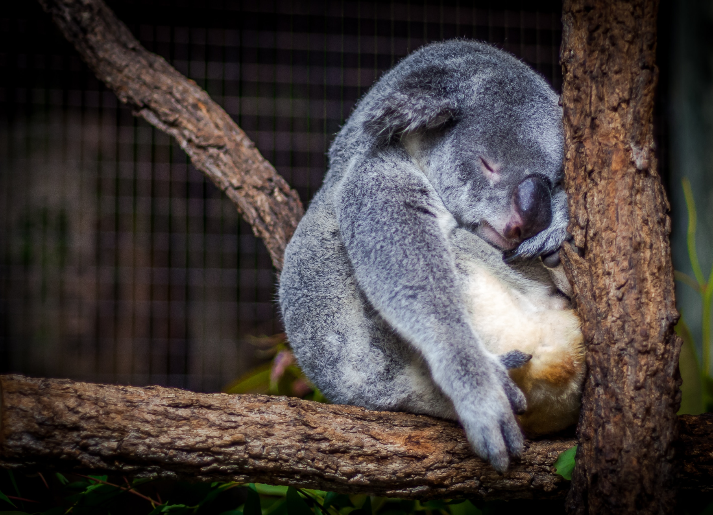
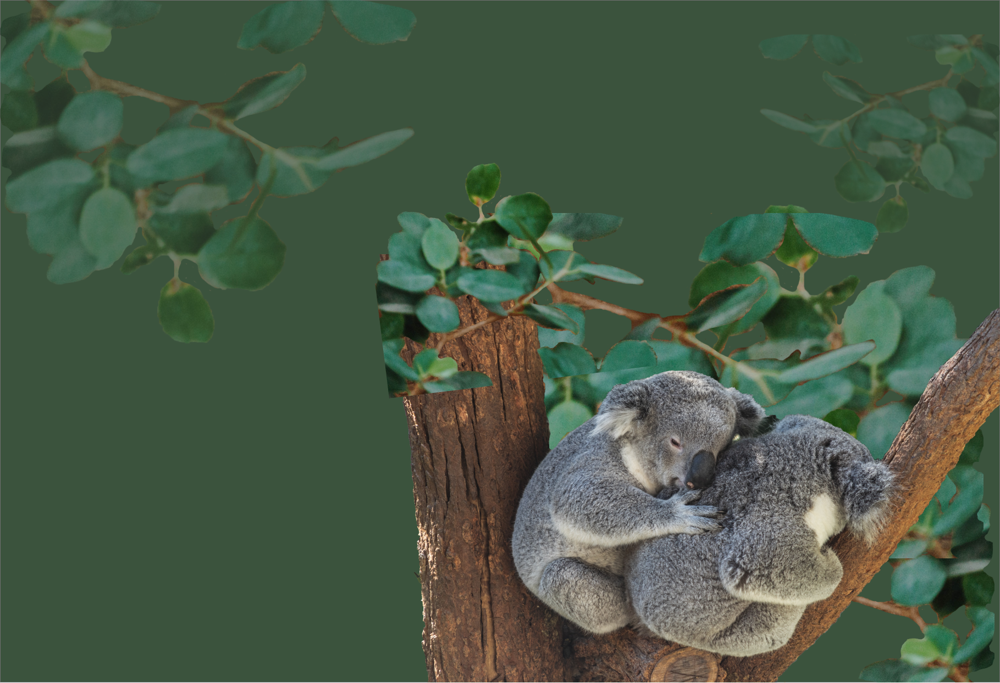

Intro -
KOALAS
Koalas, often mistakenly called “koala bears” are
short, cute, cuddly marsupials, which means a pouched animal. I was inspired
to create this site to celebrate the lives of these beautiful creatures, as
well as educate others about their decreasing population.

About -
THE MARSUPIAL
Koalas, or Phascolarctos cinereus, are
herbivores and they live inside its mother’s belly for about 6
months, and rides on its mother’s back or belly until they are about
a year old. They are 20 pounds on average and they have six
opposable thumbs. Most koalas live in eucalyptus trees in Australia,
however, because of urbanization, which causes habitat destruction,
many koalas are dying.
FOOD

Leaves
LIFESPAN

20 years
SIZE

3 feet
SLEEP

16 hrs


Status -
ARE THEY ENDANGERED?
Koalas are not endangered, but their population
is functionally extinct - meaning they no longer have an impact on the
ecosystem. Recently, bushfires across the eastern coast of Australia
have potentially killed hundreds of koalas. Koalas, for a long time,
have dealt with land clearing, development, and global warming which
causes them to migrate or die. This increases inbreeding and disease,
which reduces the genetic diversity of these creatures.

Behavior -
SLEEPING 18 HRS A DAY
Koalas rarely leave the Eucalyptus trees
they sleep on as they spend 18 hours of the day dozing. Koalas need
a lot of space - about a hundred trees per animal - which is a big
problem as Australian woodlands continue to shrink. Koalas, when
awake, can be ferocious as they growl and bite, when they are being
captured.


Diet -
EATING EUCALYPTUS LEAVES
When they are not sleeping, they eat
eucalyptus leaves and do not drink much water because they get most
of their moisture from the leaves. They eat two and a half pounds of
leaves a day, and even store them in their cheeks to snack on them
later on. Their long gut allows koalas to be unharmed by the poison
of the leaves, and they even smell like cough drops, because they
eat so many leaves.

Facts -
THEY HAVE POUCHES
- Female koalas have two vaginas - one for sperm and the other one for birth. Similarly, male koalas have two prongs for their penises.
- About 90% of Koalas have chlamydia, but it is different from the STD humans get. Koalas can pass on chlamydia through mating and birth which can cause blindness, infertility, and even death.
- Baby koalas, or joeys, eat their mother’s poop. The poop pellets are followed by a runny, protein rich substance called pap which helps the baby grow.

Impact -
HOW WE CAN HELP KOALAS
Koala population is on the decline, as
evidenced in recent news that a wildfire broke out in Lake Innes
Nature Reserve, a critical koala habitat. Hospitals estimate 350
koalas have died, and it will be hard to recover because koalas have
a slow breeding time. Because Koalas constantly migrate across
streets in urban areas as their habitats are being destroyed, we
should be wary not to hit them when driving at night. If you live in
a koala area, make sure to plant eucalyptus trees and to donate to
koala protection organizations.